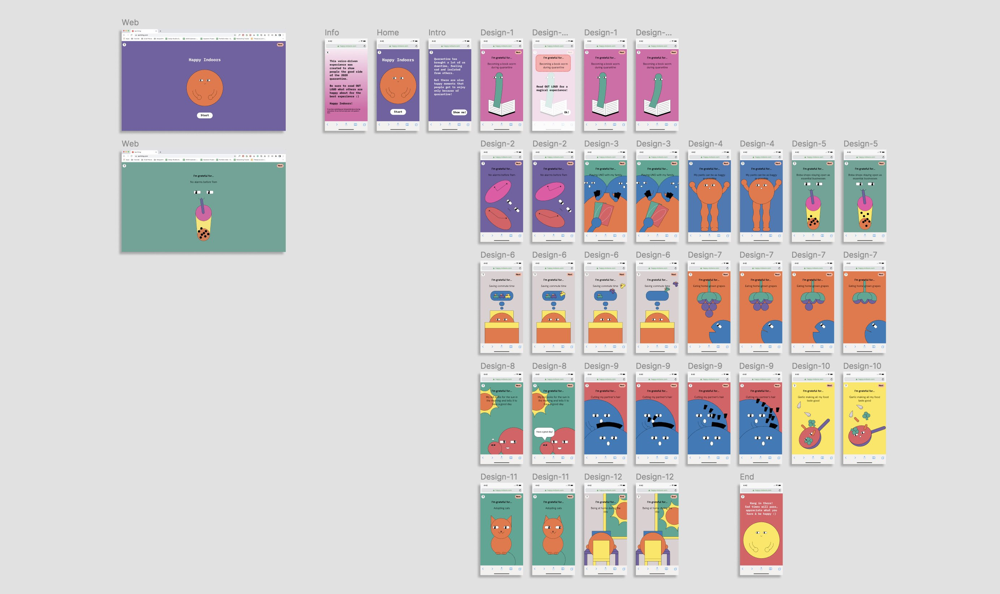

Happy Indoors
Experience Design / Web Design & Development
HAPPY INDOORS is a voice-driven web experience that shares positive moments of the Covid-19 quarantine.
Background
In Spring 2020, many states in the US imposed lockdowns due to the impact of the Covid-19 pandemic. With businesses, restaurants and schools shutdown, people were forced to adapt to a remote work life. Over the course of 5 months, I have seen people I know go through stages of curiosity, boredem, isolation, and acceptance. While some people find comfort at home, most others struggle with limited human interactions. More people around me were having more downtimes than before, and that was when I decided to make something that spread positivity.
Concept Development
In the beginning, I wanted to make a screaming challenge. The inspiration was taken from people screaming into open-spaces such as moutains and oceans. I quickly mocked up a few interactions I had in mind and tested them with paperJS and p5JS, the two libraries I used to build out the experience.
Even though the prototypes felt nice and interactive, I felt the experience lacked tangibility and relevance. Screaming is an act of letting out negative emotions, but it doesn't actually have any compelling narrative behind it. That was when I thought of the little things that brought me joy during quarantine, such as making more insider jokes with my family and chasing off birds that tried to eat homegrown grapes in our backyard. I believed that despite of how the situation is right now, there must be little things that can cheer people up.
Why is user's voice an important element of the experience?
If the user reads something out loud and get a visual response, they feel more connected to the experience. This is why I decided to have the animations triggered only by user's voice input.
Survey
I set up a questionnaire on social media and asked for my network's input on things they are thankful for during quarantine. It could be something that the situation has brought to them, or something they previously had but didn't appreciate. I wanted to keep the responses as relatable as possible, which was why I chose to collect data in a more casual way. For the privacy of the participants, I blocked out their names in this documentation.
Character Design + Drawing Style
I spent 1-2 days illustrating a couple of looks as the main visual. I decided early on that I wanted to use this type of eyes as they're commonly seen in memes and funny stickers. I wanted the character to have a comical effect, so I explored a couple options: a worm-like creature, a human-like character, a ball with hands. I ultimately kept the arm part of the character, but removed the head and legs to maintain the more abstract-geometric forms. This also helps simplify the development process.

Color Choices
The goal is to design a delightful experience, so from the very beginning I knew I wanted to use a bright, high saturation color scheme. I did some research on RGB colors similar to the ones used in RISO printing, as I have always been a fan of the unique, colorful look of RISO prints. Here’s a selection of colors I decided to use in this project:
Final Art Assets
Prototypes
Final prototype of the interactive experience is shown below. In the actual experience, the animations would only be triggered by the voice input of the user.
Challenges & Solutions
Here are some conceptual and technical challenges I faced during the process and corresponding solutions I came up with:
1. Should it be a desktop or mobile experience?
I ultimately decided to design for mobile because more people tend to go on their phones during their free time. However, the experience is still desktop-friendly.
2. Is an instruction page needed? What are the CTAs?
Basic instructions were added to the beginning of the experience to clarify the purpose of using voice-inputs. The CTAs are straightforward "Start", "Show Me", "Ok!".
3. Are people sick of hearing "inspirational" things?
Yes. So I sought to add a bit of humor and ridicule to the project. I decided to go with a character that is abstract but has funny eyes.
4. Why did I choose PaperJS and P5JS?
PaperJS grants me control over vector graphics, allowing me to control specific points of the shape really easily. P5JS has a great sound library which speeds up the process of getting voice inputs.
Development
Stage 1: Testing voice input with p5JS Sound library
I used sound detected by P5JS library to control the graphics created by PaperJS. Below is a video of how the volumn bar and bezier curve changes based on the sound input.
The project is fully prototyped out and moved into development stage. The final experience will be available in September.